titanic <- data.frame(Titanic)Lecture 2a - Exploring Many Categorical Variables
Categorical data poses a number of problems when we have multiple variables. Suppose we have \(J\) categorical variables \(X_1,\dots,X_J\), and each categorical variable has \(c_j\) possible categories.
For example, \(X_1\) could be Gender with levels Male/Female and \(c_1=2\); then \(X_2\) could be Eye Colour with levels Blue/Green/Brown and \(c_2=3\); \(X_3\) could be Hair colour with levels Brown/Blond/Black/Red/Grey/White and \(c_3=6\), etc.
Each observed data point is then one combination of the possible categories from each variable - Male + Green Eyes + Red hair, or Female + Brown Eyes + Black hair. In total, there are \(C^*=c_1\times c_2\times \dots\times c_J= \prod_j c_j\) possible combinations of categories! In our example, this would be \(2\times3\times6=36\). As the number of variables \(J\) and number of categories for the variables \(c_j\) get bigger, then \(C^*\) can grow very large very quickly and can rapidly become challenging to deal with. It can quickly become possible for there to be more possible combinations of categories than you have data observations - a problem known as sparsity.
Contingency tables
Multivariate categorical data can be summarised by the counts of the number of observations in each possible combination of levels of the categorical variables. This collection of counts forms a contingency table. In general, the contingency table can be represented as
- a \(J\)-dimensional array,
- containing a total of \(C^*\) cells
- each containing the observed count of each possible combination of categories.
Sparsity manifests as many of the table entries being zero.
For example, the Alligator data set in the vcdExtra package contains data on 219 observations from a study of the primary food choices of alligators in four Florida lakes. The data set has \(J=4\) variables, all categorical:
- Sex - male, or female
- Size - large (>2.3m) small (<=2.3m)
- Lake - one of four possible lakes
- Food - primary food choice: bird, fish, invertebrate, reptile, other
This seems like a relatively modest data set - how many different combinations of categorical variables are there? The answer is \(2\times2\times4\times 5=80\).
Visualising many categorical variables
To explore multivariate categorical data, we start with some low-dimensional plots, for 2 or 3 variables. The most effective visualisations are:
- Mosaicplots use area to indicate the counts within categories and combinations of categories.
- Grids of barplots can also be effective to visualise how a distribution can change across categories.
- Grouped barplots or stacked barplots
These plots have the advantage of highlighting some important association features. One shall look at the following questions:
Which categories appear most/least often?
Do the counts and their distributions differ across subgroups?
Is there evidence of dependence or independence between categories?Example: Sinking of the Titanic
Data on the 2201 people on board the Titanic at the time of its sinking:
- Class - 1st, 2nd, 3rd, or crew
- Sex - male, or female
- Age - child, or adult
- Survived - survived or died
There are 32 combinations of factors here. Interest in these data centres on whether factors like Class or Sex affected survival. We’ll come to this soon, but first let’s just focus on the individual variables.
The raw data for categorical variables are not terribly easy to interpret:
print(titanic[1:10,]) Class Sex Age Survived Freq
1 1st Male Child No 0
2 2nd Male Child No 0
3 3rd Male Child No 35
4 Crew Male Child No 0
5 1st Female Child No 0
6 2nd Female Child No 0
7 3rd Female Child No 17
8 Crew Female Child No 0
9 1st Male Adult No 118
10 2nd Male Adult No 154Simple barplots of the individual factors show some general features of the marginal distributions and are a good place to start:
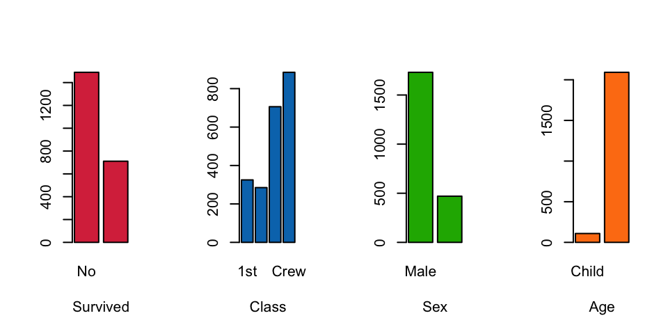
Here we see that:
- Twice as many people died than survived
- Most people were crew rather than passengers
- Considerably more people onboard were male than female (crew were mostly male)
- Far more adults onboard than children
Composite Barplots
It can be helpful to focus on a single response variable of primary interest to investigate in relation to the others. In the case of the Titanic data, the Survived variable is most of interest. We want to explore how the distribution of the number of survivors is affected by the other variables.
A simple variation of the barplot is to break apart each bar into the pieces according to combinations with other variables. This gives a stacked barplot. For example, we can decompose the number of survivors by Class:
barplot(xtabs(Freq~Survived+Class, titanic), beside=FALSE, col=c('#D9344A','green3'))
Now we can see the variations in the nunmber of survivors within each of the bars. This can be helpful to compare the proportions of the sub-groups of Survivors within each bar. For instance, we see that a greater share of passengers in 1st class survived, compared to the rest. However, as the heights of each bar differ it can be difficult to directly compare the numbers in the subgroups for the different bars.
Alternatively, we can group the bars side-by-side rather than stacking them. This can help if we want to compare the total amounts across classes, rather than proportions.
barplot(xtabs(Freq~Survived+Class, titanic), beside=TRUE, col=c('#D9344A','#1DB100'))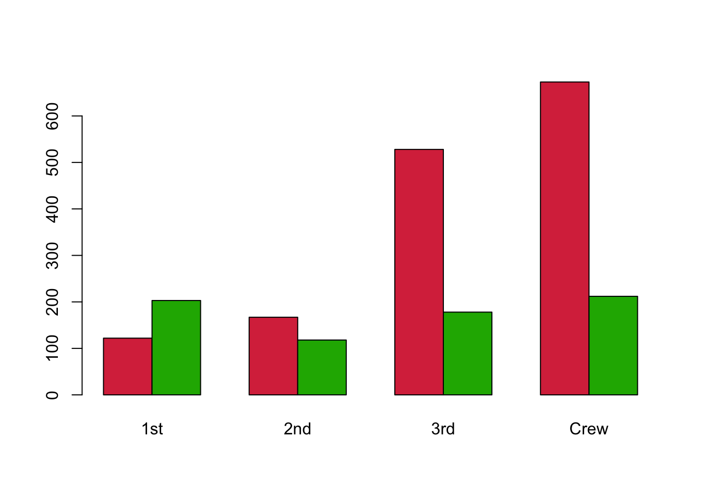
It’s now far clearer that more 1st class passengers survived than did not, and this situation was dramatically reversed for the other passengers. Only a small proportion of the Crew and those in 3rd class surivived.
We can repeat this process to look at the effects of the other variables:
par(mfrow=c(2,2))
barplot(xtabs(Freq~Survived+Sex, titanic), beside=FALSE, col=c('#D9344A','#1DB100'))
barplot(xtabs(Freq~Survived+Sex, titanic), beside=TRUE, col=c('#D9344A','#1DB100'))
barplot(xtabs(Freq~Survived+Age, titanic), beside=FALSE, col=c('#D9344A','#1DB100'))
barplot(xtabs(Freq~Survived+Age, titanic), beside=TRUE, col=c('#D9344A','#1DB100'))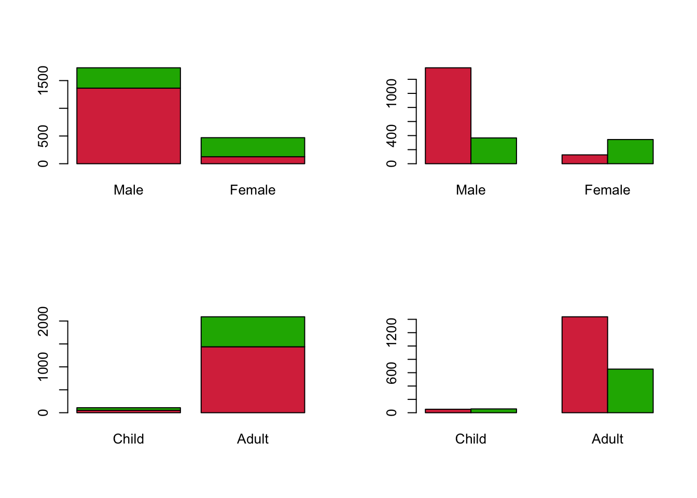
These plots show that a greater proportion of Female passengers survived than Male, but there were far fewer Female passengers overall. For Age, the number of Children appears very (surprisingly?) small and seem to be roughly equally likely to survive or not. The majority of Adults did not survive.
Features of composite barplots:
- Stacked barplots can be useful to indicate something about the relative composition of each bar in terms of any subgroups within each bar
- Grouped barplots are more effective to compare sizes of subgroups across different categories and bars
- When the totals within the bars differ substantially, they become difficult to read
- To adequately compare proportions, we would have to rescale each bar to have the same overall height.
Mosaic plots
A mosaic plot is a modification of a stacked barplot which rescales the bars to be the same height so we can focus on the proportions of the subgroups. It also allows the width of the bar to vary. For example, the mosaic plot of Survived by Sex looks like this:
mosaicplot(xtabs(Freq~Sex+Survived, titanic), col=c('#D9344A','#1DB100'), main='')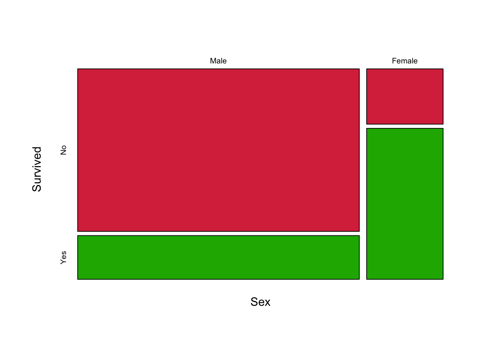
Before we try and interpret the plot, it is helpful to understand a little about how it was constructed. The general algorithm is as follows:
- Begin with an empty rectangle to represent the data set
- Take the first variable, and divide the horizontal axis into sections proportional to the sizes of its categories.
- Take each column, and divide it into rectangles vertically according to the size of the second variable categories.
- Continue as needed, splitting each tile alternately horizontally and vertically
So, the plot we have generated has columns with widths proportional to the numbers of the two Sexes of passengers. As there were more Male passengers than Female, the Male column is wider. The columns are then split into tiles according to the proportion of each Sex that Survived or did not, with the Green area of each representing the proportion which Survived. If the two Sexes had the same rate of survival, then the two columns would split into similarly sized rows. What we see here is a substantial imbalance in the heights of the rows which is indicative of an association. Female survival rates were much better than the Male survival rate, so there’s an association between Sex and Survived.
In general, this functions just like a stacked barplot where we stretch each bar to have the same height. The main advantage of these plots comes when we have more than two variables to explore.
Did Class affect Survival?
mosaicplot(xtabs(Freq~Class+Survived, titanic), col=c('#D9344A','#1DB100'), main='')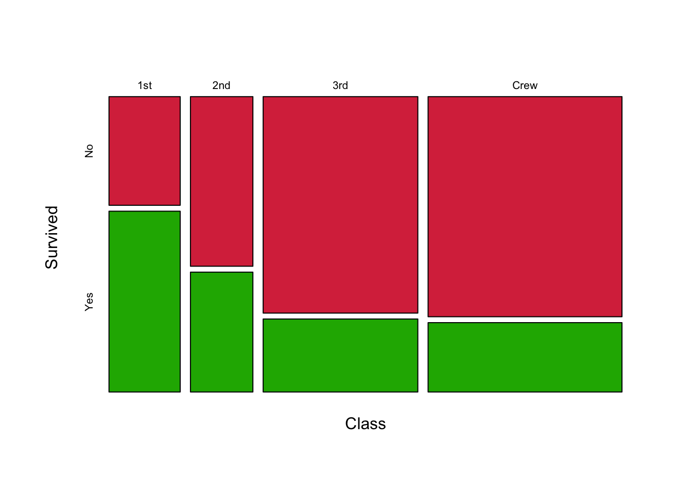
As we said above, if there was no effect of Class then we would expect the four bars would divide equally for each Class as the same proportion of passengers would have survived or not irrespective of Class. Clearly, the bars do not divide equally and again we have signs of an association. We can see that 1st class passengers had far better survival rates, followed by 2nd class, and 3rd class passengers didn’t fare much better than the Crew.
Example: Arthritis Treatment
library(vcd)Loading required package: griddata(Arthritis)The arthritis data contains the results from a double-blind clinical trial investigating a new treatment for rheumatoid arthritis. The data set contains observations on 84 patients with variables:
- ID - patient ID.
- Treatment - factor indicating treatment (Placebo, Treated).
- Sex - factor indicating sex (Female, Male).
- Age - age of patient.
- Improved - ordered factor indicating treatment outcome (None, Some, Marked).
head(Arthritis) ID Treatment Sex Age Improved
1 57 Treated Male 27 Some
2 46 Treated Male 29 None
3 77 Treated Male 30 None
4 17 Treated Male 32 Marked
5 36 Treated Male 46 Marked
6 23 Treated Male 58 MarkedTreatment, Sex, and Improved are all nominal categorical variables. Improved is ordinal, since the category levels can be placed in a meaningful order. The question is whether the patient Improvement depends on Treatment and/or Sex.
A mosaic plot of a single variable is basically a simple stacked barplot with only one bar. Looking at the patient improvement only gives:
mosaicplot(xtabs(~Improved, Arthritis), col=c('#D9344A','#1DB100','#2297E6'), main='')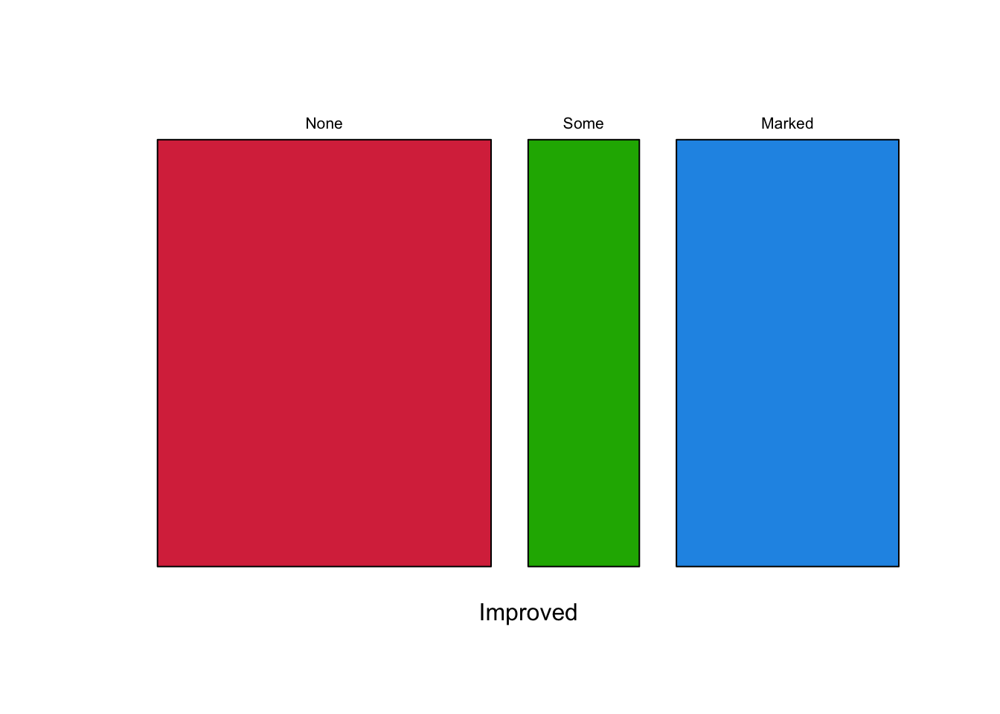
So, no improvement is most common, but of the two groups which do have an improvement the improvement is more likely to be Marked than Some. Of course, we could just get this from a simple summary table:
xtabs(~Improved, Arthritis)Improved
None Some Marked
42 14 28 We can now start splitting things up by Treatment type. The data used to construct the plot is the 2-way contingency table, obtained by summarising the data:
xtabs(~Treatment+Improved, Arthritis) Improved
Treatment None Some Marked
Placebo 29 7 7
Treated 13 7 21mosaicplot(xtabs(~Treatment+Improved, Arthritis), col=c('#D9344A','#1DB100','#2297E6'), main='')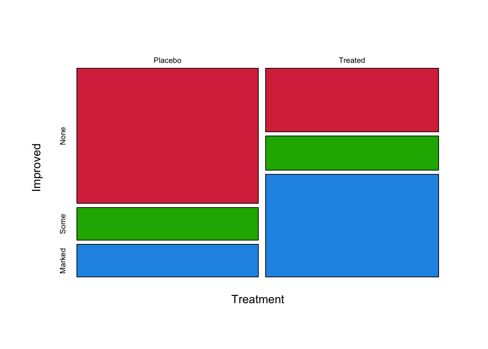
There are a number of things to note here:
- The number of patients in the Placebo and Treated group appears equal, as the two columns are equal in size
- The main outcome from the Placebo group is No Improvement - perhaps no surprise! But some patients improve anyway.
- In the Treatment group, the most likely outcome is a Marked Improvement. An Improvement of
Someis the least common outcome. - Clearly there is an association between Treatment and Improvement.
For comparison, a mosaic plot with no association between Treatment and Improvement would look like this:
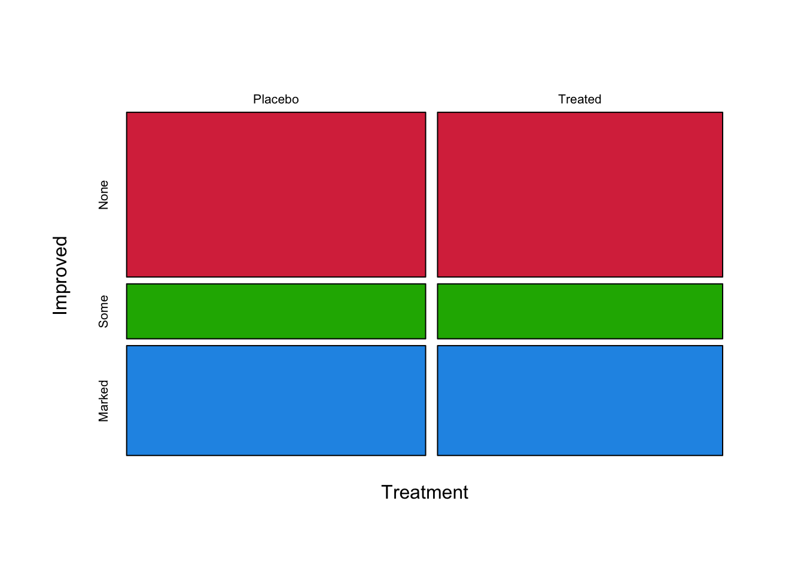
As we can see, in the event of no association the bars decompose into regular tiles. A loose test of this is whether we can draw a straight line from one side of the plot to the other without going through any of the tiles.
The order in which we introduce the variables into the mosaic plot also affects the plot we draw. Here, we have split on Treatment first and then on Improved. We could do this the other way around:
mosaicplot(xtabs(~Improved+Treatment, Arthritis), col=c('#D9344A','#1DB100','#2297E6'), main='')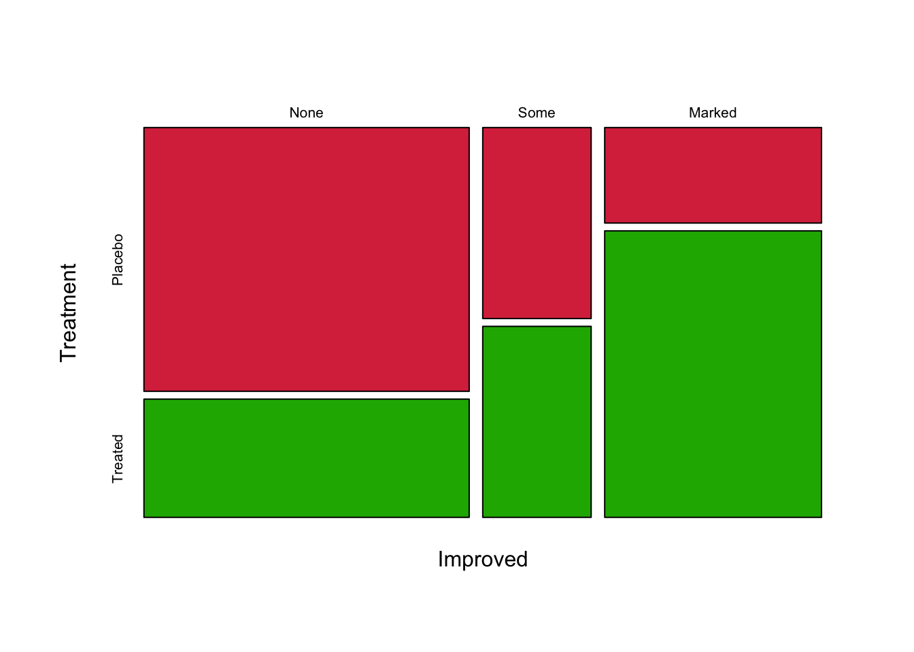
Now we split first by Improved, which creates three columns that are then each split into Treatment type. This plot is most useful for showing how Improvement types decompose into Treatment groups, which is less helpful! Usually, we would split on the dependent or response variable last.
More than two variables
With more than two variables, we can still apply the same techniques to compare proportions, but it leads to two slightly different visualisations
- the mosaicplot plot - for more than two variables draws the plots in a (nested) grid
- for small numbers of variables, we can look at how barplots for different levels of other variables
- the doubledecker plot - draws a row of simple mosaic plots to compare the different levels of a third (or fourth, …) variable
If we were to introduce Sex as a third variable to the mosaic plot of the Arthritis data, we will sub-divide each of the four tiles in the plots above into Male and Female halves.
mosaicplot(xtabs(~Treatment+Sex+Improved, Arthritis), col=c('#D9344A','#1DB100','#2297E6'), main='')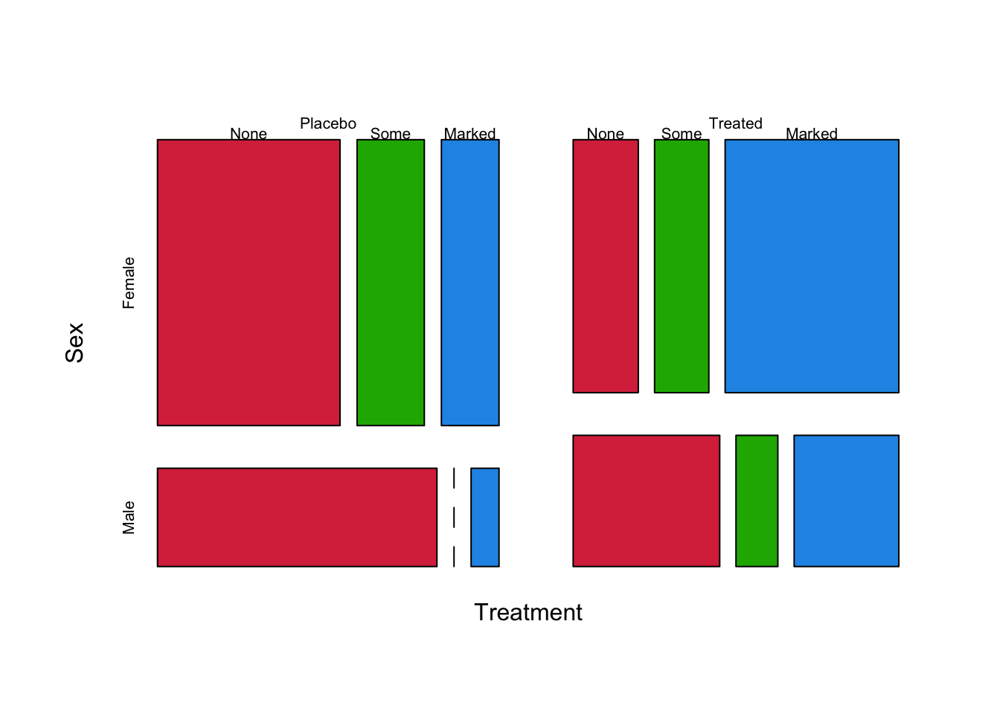
Now the data are first split into columns by Improved, then each column split into rows by Treatment, and now further we split these tiles into smaller columns by Sex. This is clearly getting more complicated, but the same ideas apply. Substantial differences in sizes of tiles would suggest something is potentially going on. Possible observations we could make:
- The Female tiles (red) are usually wider than the Male tiles (green) - we have overall more Female patients
- Female patients generally seem to improve more than Males, regardless of treatment
- Treatment appears to increase the proportion of Improved patients
- Female patients appear to improve more than Male.
Doubledecker plot
A doubledecker plot is a particular type of mosaic plot that splits all of the tiles vertically, except for the last one. The doubledecker plot is a lot like a sequence of stacked barplots for combinations of the categorical variables.
library(vcd)
doubledecker(Improved~Treatment+Sex,data=Arthritis)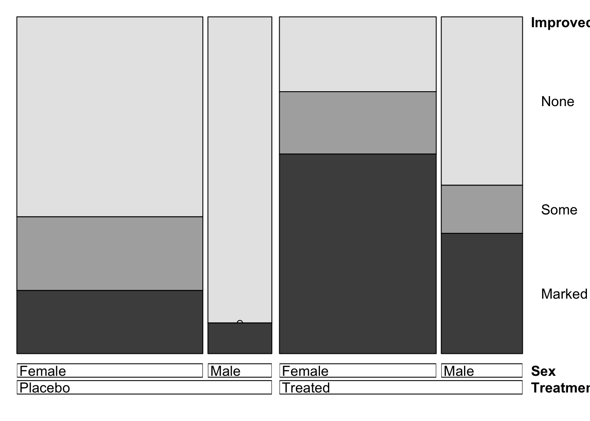
We interpret this plot in much the same way. Here the columns are divided into the Treatment groups first, then each Treatment group divided into the two Sexes. This creates four columns, that are split into proportions according to Improved. So, we can observe similar features to before:
- The Female columns are wider than the Male, suggesting more Female patients
- The
Markedimprovement tiles in the Female columns are larger than those in the Male, suggesting Female patients response better - There was nobody with the combination Male + Placebo + Some Improvement. This is denoted by the hollow circle where this tile should be.
If we have a particular response variable in mind, the double-decker plot is often more useful than the general mosaic as we can split the independent variables (Sex, Treatment) into columns, and split the columns by the dependent variable (Improved). Overall, we can identify the same features from both types of plots, but the information is presented differently.
Example: Sinking of the Titanic
Let’s return to the Titanic data and explore whether Survived depends on combinations of Sex or Class. In fact, since the scale of this problem is relatively modest. we can actually visualise the data as a matrix of barplots.
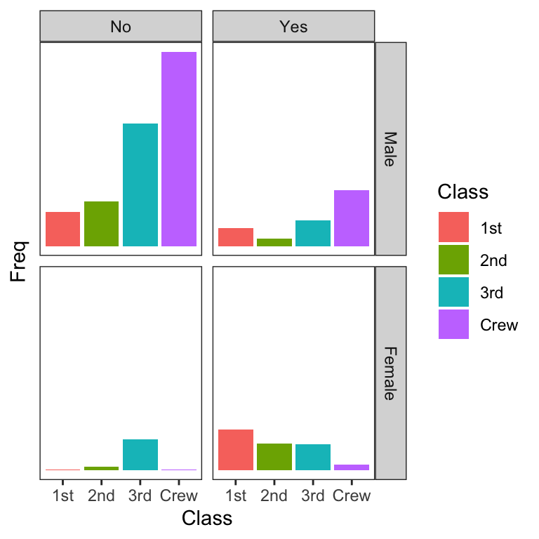
While they show the shape of the distribution, making detailed comparisons is not terribly easy.
How did the combination of Class and Sex affect Survival? We can incorporate more variables into the doubledecker plot which will highlight differences in proportions rather than counts.
The columns are now grouped by combinations of Class & Sex.
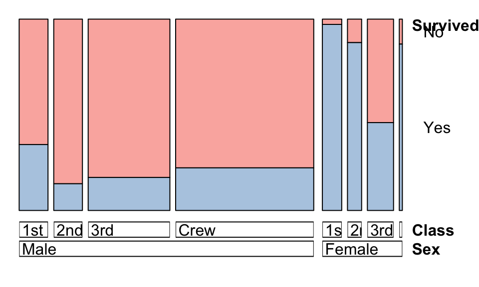
- Female survival was still higher overall, though declined rapidly with Class.
- Almost all Female 1st class passengers survived, though those in 3rd class were not so fortunate
- Male survival rates don’t decline so much with Class, and Males in 2nd class have the lowest survival.
An alternative presentation of the same information is a mosaic plot:
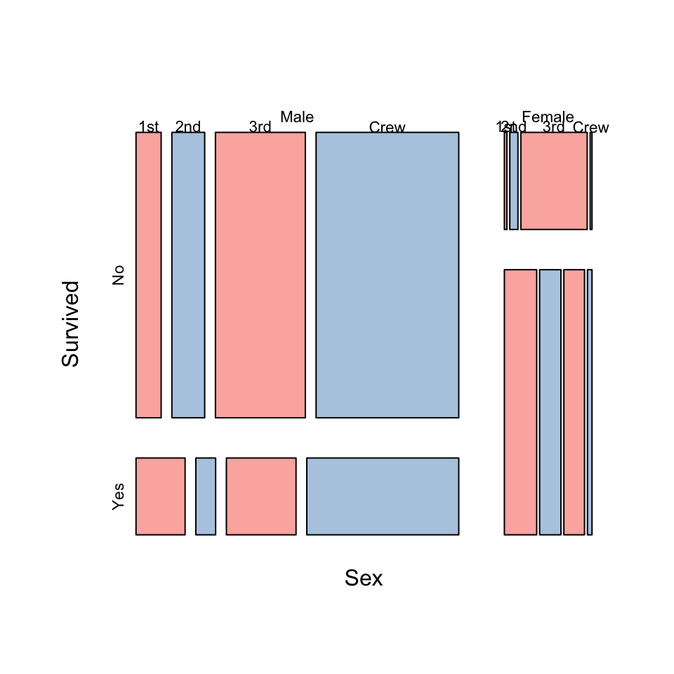
- A mosaic plot show the data in a grid, rather than row.
- The doubledecker plot uses a fixed height for its bars, but the mosaic plot varies the height and width of the panels according to the proportions of the factor variable.
- This can make it a bit easier to distinguish the relative sizes of the combinations.
The mosaic plot algorithm is sensitive to the ordering of variables, so changing this will radically affect the plot drawn:
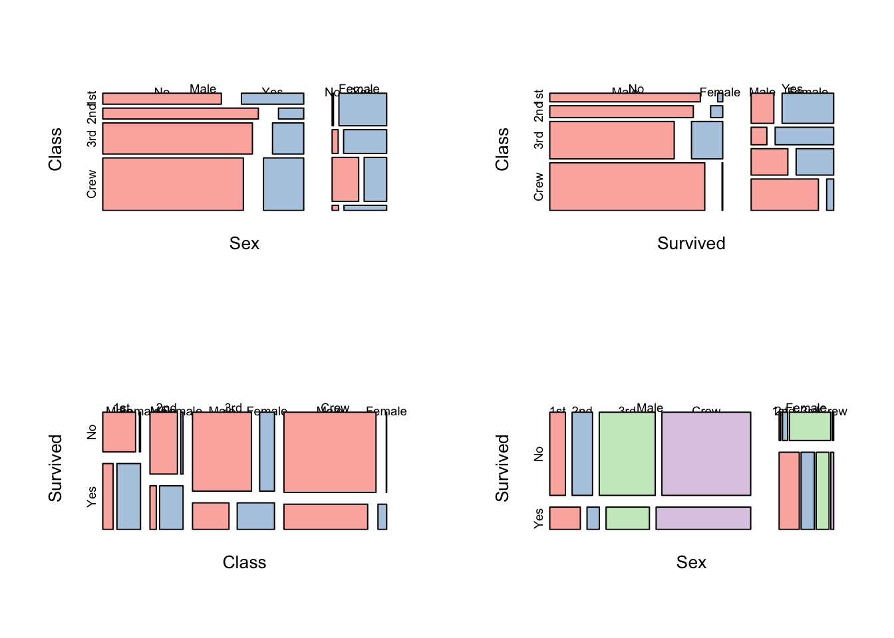
However all of these methods start to struggle with more than a few variables. Unfortunately, too many combinations make the plots difficult to read and introduce a lot of ‘0’ counts into the data.
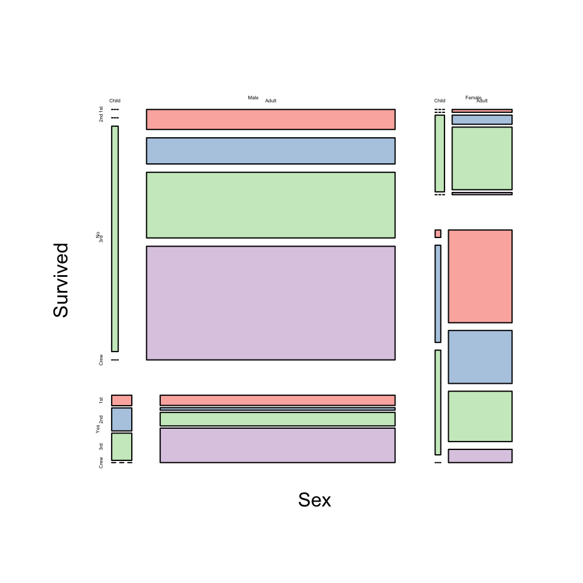
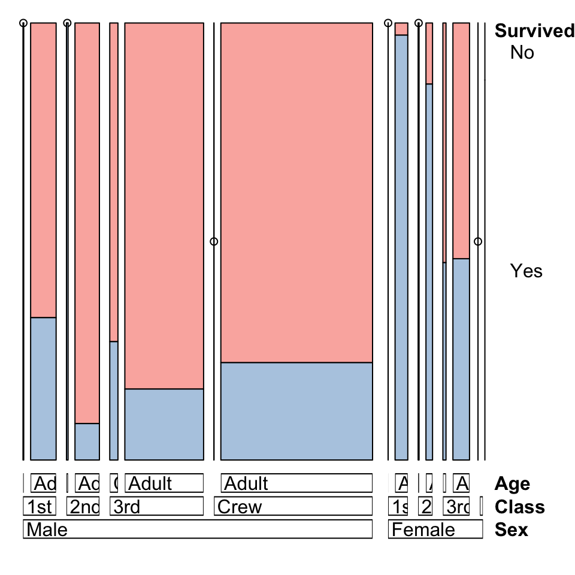
Connection with \(\chi^2\) tests
The visualisation of Titanic data provided above suggests that there is some association here to explore. The rigorous way to assess association is through \(\chi^2\) tests. Here’s how they work.
First step: Creating Contingency Tables
First, we need to set up a general 2-way contingency table problem. Suppose that:
- We have observed \(n\) individuals
- We have recorded that value of two categorical variables for each:
- Variable 1, which has \(C\) distinct levels
- Variable 2, which has \(R\) distinct levels
- The number of individuals who are observed in level \(i\) for variable 1 and level \(j\) for variable 2 is called \(o_{ij}\).
We can then summarise this in the 2-way table below, where the levels of variable 1 are the rows of the table, and the levels of variable 2 are the columns:
| Var 1\ Var 2 | 1 | 2 | … | \(j\) | … | \(C\) | Total |
|---|---|---|---|---|---|---|---|
| 1 | \(o_{11}\) | \(o_{12}\) | … | \(o_{1j}\) | … | \(o_{1C}\) | \(r_1\) |
| 2 | \(o_{21}\) | \(o_{22}\) | … | \(o_{2j}\) | … | \(o_{2C}\) | \(r_2\) |
| \(\vdots\) | \(\vdots\) | \(\vdots\) | \(\ddots\) | \(\vdots\) | \(\ddots\) | \(\vdots\) | \(\vdots\) |
| i | \(o_{i1}\) | \(o_{i2}\) | … | \(o_{ij}\) | … | \(o_{iC}\) | \(r_i\) |
| \(\vdots\) | \(\vdots\) | \(\vdots\) | \(\ddots\) | \(\vdots\) | \(\ddots\) | \(\vdots\) | \(\vdots\) |
| R | \(o_{R1}\) | \(o_{R2}\) | … | \(o_{Rj}\) | … | \(o_{RC}\) | \(r_R\) |
| Total | \(c_1\) | \(c_2\) | … | \(c_j\) | … | \(c_C\) | \(n\) |
Here we have also introduce notation for the row and columns sums:
- \(r_i\) is the sum of counts in the \(i\)th row. This corresponds to the number of observations of level \(i\) of Variable 1. The collection of row counts \(r_1,\dots,r_R\) corresponds to the counts for all the different levels of Variable 1.
- \(c_j\) is the sum of counts in the \(j\)th row. This corresponds to the number of observations of level \(j\) of Variable 2. The collection of row counts \(c_1,\dots,c_C\) corresponds to the counts for all the different levels of Variable 2.
Contingency tables in R
We can use the xtabs function from Lecture 1 to construct these contingency tables from data. There are two different usages, depending on whether the data has been pre-summarised as counts (like the Titanic data), or if the data is not summarised and each row corresponds to a single observation.
If the data is summarised already, and contains the totals in column called counts, then the summary of counts for the levels of variable1 is obtained by:
xtabs(counts~variable1, data=dataset)For example, to summarise survival:
xtabs(Freq~Survived,data=titanic)Survived
No Yes
1490 711 For 2-way tables, we simply add another variable to the right of the ~ symbol:
xtabs(counts~variable1+variable2, data=dataset)For example, to summarise combinations of survival with class of passenger:
xtabs(Freq~Survived+Class,data=titanic) Class
Survived 1st 2nd 3rd Crew
No 122 167 528 673
Yes 203 118 178 212n-way Contingency Tables
When we have \(n\) categorical variables, we could create an \(n\)-way contingency table. The table would summarise the counts of every possible combination of every possible level of the \(n\) variables. This obviously gets more complicated with larger \(n\), but we’ll come back to this later.
For instance, we could summarise the combinations of Titanic passenger survival, passenger class and passenger sex:
xtabs(Freq~Survived+Class+Sex, data=titanic), , Sex = Male
Class
Survived 1st 2nd 3rd Crew
No 118 154 422 670
Yes 62 25 88 192
, , Sex = Female
Class
Survived 1st 2nd 3rd Crew
No 4 13 106 3
Yes 141 93 90 20Now we should have a 3-dimensional table with \(2\times 4\times 2\) cells! But R can only print at most 2-dimensional tables. Instead, it has given us two separate 2-way table for Survived+Class, one for each of Sex=Male (top) and Sex=Female (bottom). We can note here that Female passengers and crew had better survivale than their male counterparts (with a notable exception being those in 3rd class).
Second step: Computing expected counts
The key idea behind using independence as the property to verify a \(\chi^2\)-test is that if two variables \(X\) and \(Y\) are independent, then we can write \[P[X=x,Y=y]=P[X=x]P[Y=y],\] or equivalently in terms of conditional probabilitiy: \[P[X=x | Y=y]=P[X=x].\] The second version tells us that even if I were to tell you the value of Y, that would not cause you to change your probability distribution for \(X\). In other words, knowing \(Y\) has no influence on how we thinkg \(X\) will behave - in other words, the two variables are completely unrelated.
The \(\chi^2\)-test is a relatively simple test for assessing independence. As a running example, let’s continue with the Titanic data and investigate possible relationships between Survived and Class. The idea behind our test is as follows:
- Using the data, we can estimate the probabilities of the different levels of
Survived(\(p_i\)) andClass(\(p_j\)) separately using the proportions of the data observed in each category. - Under a hypothesis of independence, I can use the first equation above to tell me that the probability of any combination of
SurvivedandClassis just the product of individual probabilities from the previous step, \(p_{ij}=p_i p_j\). Applying this to all combinations of categories gives me the probability for every possible combination of the two variables, \(p_{ij}\). - The expected number of observations in each combination of categories is obtained by multiplying the probabilities from step 2 by the sample size \(n\). This gives the expected counts for every combination, \(E_{ij}=np_{ij}\).
- We can then compare our expected counts to the observed counts in the data, and construct a test statistic.
Let’s see how this goes with our data:
Observed counts: We observe the following counts of the different categories of Survived and Class
| No | Yes |
|---|---|
| 1490 | 711 |
| 1st | 2nd | 3rd | Crew |
|---|---|---|---|
| 325 | 285 | 706 | 885 |
Observed proportions: Dividing the observed counts by the sample size (\(n=2201\)) gives the proportions of the data observed in each category:
| No | Yes |
|---|---|
| 0.676965 | 0.323035 |
| 1st | 2nd | 3rd | Crew |
|---|---|---|---|
| 0.1476602 | 0.1294866 | 0.3207633 | 0.40209 |
Unsuprisingly, the more common categories are now associated with larger proportions.
Probabilities of combinations under independence We assume the null hypothesis to be \(H_0\): survival is independent from class. Then we can say, for example:
\[P[Survived=Yes,Class=1st] = P[Survived=Yes]\times P[Class=1st],\]
and the same for all the other combinations. By multiplying our probabilities from the previous step, we can make the following probability table for the joint distribution of Survived and Class under our null hypothesis of independence:
| 1st | 2nd | 3rd | Crew | |
|---|---|---|---|---|
| No | 0.0999608 | 0.0876579 | 0.2171455 | 0.2722008 |
| Yes | 0.0476994 | 0.0418287 | 0.1036178 | 0.1298891 |
Expected counts under independence Multiplying these probabilities by the number of passengers will give us the expected number of passengers (\(E\)) in each group under independence:
| 1st | 2nd | 3rd | Crew | |
|---|---|---|---|---|
| No | 220.0136 | 192.93503 | 477.9373 | 599.114 |
| Yes | 104.9864 | 92.06497 | 228.0627 | 285.886 |
Third step: Pearson residuals and \(X^2\)-statistic
We can now compare these expected counts with the ones we actually observed. If we find big differences, then we would conclude our hypothesis of independence must be wrong and that there is evidence of some form of relationship.
Before we do that, however, we’ll just set this up mathematically so we can obtain a formula for our test statistic.
For the Titanic data problem, we can construct the test statistic using the method above and get a test statistic of \(X^2=190.46\) (check!). Comparing to the \(\chi^2\) distribution - this has a \(p\)-value of approximately 0! So, we strongly reject the hypothesis of independence and would do so at any of the usual levels of significance. Survival of the Titanic disaser and passenger class appear to be related!
Having discovered an interesting relationship, a good question to ask now is: why? Why did we reject this hypothesis? What about the data seemed to be at odds with the variables being independent?
To answer this, we look at the Pearson residuals - the components inside the double sum in our test statistic. For each combination of categories, we get a value of\(\frac{(O_{ij}-E_{ij})^2}{E_{ij}}\). We can inspect those values and see what we find. In particular, large values of the residuals indicate substantial departures from the null hypothesis. The sign of the residuals indicates whether there are \(\color{red}{\text{fewer}}\) (<0), or \(\color{red}{\text{more}}\) (>0) values than expected under independence.
| 1st | 2nd | 3rd | Crew | |
|---|---|---|---|---|
| No | \(\color{blue}{\text{-6.608}}\) | \(\color{blue}{\text{-1.867}}\) | \(\color{red}{\text{2.290}}\) | \(\color{red}{\text{3.019}}\) |
| Yes | \(\color{red}{\text{9.566}}\) | \(\color{red}{\text{2.703}}\) | \(\color{blue}{\text{-3.315}}\) | \(\color{blue}{\text{-4.370}}\) |
Here we notice the very large values in the 1st class column - we see far \(\color{red}{\text{more}}\) survivors than expected and far \(\color{red}{\text{fewer}}\) fatalities. The pattern appears to be reversed for those in 3rd class and the ship’s crew. Clearly, first class passengers had far better outcomes than would be expected if the chances were equal for everyone on board.
Finally, there’s no real need to do this entire calculation by hand as R easily perform an independence test for a contingency table. All we need to supply is the table of observed values obtained from xtabs:
chisq.test( xtabs(Freq~Survived+Class,data=titanic) )
Pearson's Chi-squared test
data: xtabs(Freq ~ Survived + Class, data = titanic)
X-squared = 190.4, df = 3, p-value < 2.2e-16Summary
- It is difficult to display large volumes of multivariate categorical data
- Start with simple plots to get to know the data structure and features, and then add complexity.
- Mosaicplots and doubledecker plots offer good methods for exploring associations between categorical variables.
- Ordering of the variables in the plot and the ordering of the categories within a variable can influence what information can be found (and how easily).
- Using the \(\chi^2\) shading can help to identify particularly unusual features.
Modelling & Testing
- Contingency tables - the standard for checking the association of two categorical variables is the \(\chi^2\) test based on the summary table of counts.
- Associations between categorical variables - if there are a small number of variables each with only a few categories, then log linear models could be considered.
- Binary dependent variables - for a binary (two-category) dependent variable, logistic regression is a good approach.